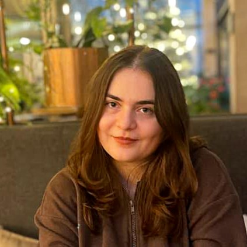

Sep 2026 – Actual
Técnico Superior en Desarrollo de Aplicaciones Web
IES Valle del Jerte · Plasencia
Hola, soy
Estudiante de Desarrollo de Aplicaciones Web (DAW)
Motivada por iniciar mi carrera en desarrollo de software, con base en Java, SQL y Front-End y experiencia previa en operaciones tecnológicas y control de calidad de datos.

Estudiante de Desarrollo de Aplicaciones Web (DAW) con gran motivación por iniciar mi carrera en el sector del desarrollo de software. Combino mi experiencia previa en operaciones tecnológicas y control de calidad de datos, con los conocimientos fundamentales que estoy adquiriendo actualmente en programación (Java), bases de datos (SQL) y Front-End. Destaco por mi capacidad de aprendizaje, pensamiento lógico y ganas de aportar valor a un equipo técnico mientras consolido mis estudios.
Sep 2026 – Actual
IES Valle del Jerte · Plasencia
Ene 2019 – Ene 2020
Information Technologies Academy · Tiflis
Ene 2014 – Ene 2018
Universidad Estatal Ivane Javakhishvili de Tiflis
Georgiano C2 · Nativo
Inglés C1 · Avanzado
Ruso B1 · Intermedio
Español B1 · Intermedio
¿Hablamos? Estaré encantada de responderte.
Plasencia, Cáceres (España)